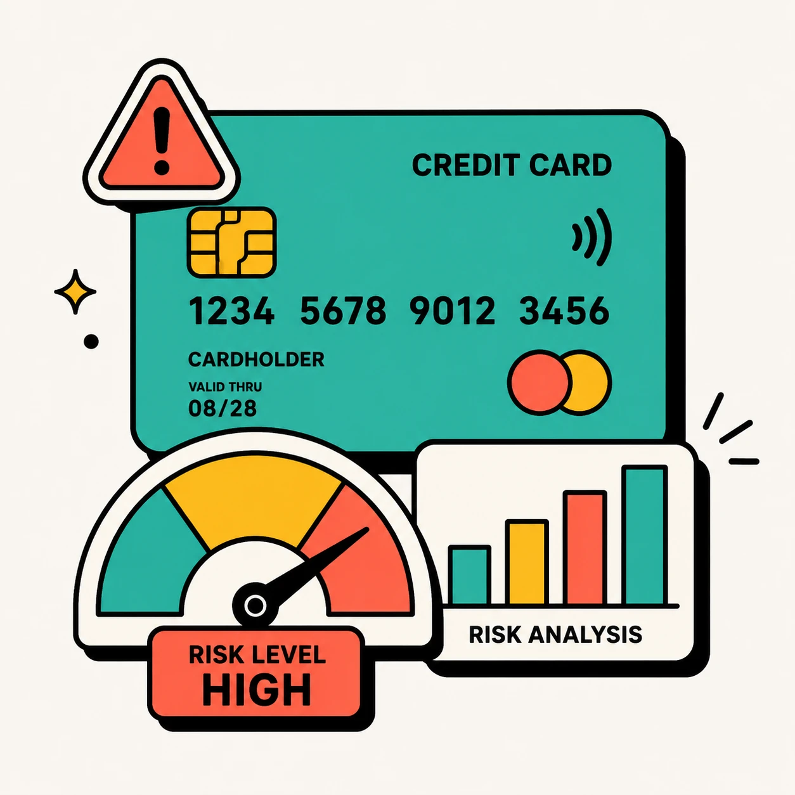

Kredi Kartı Geç Ödeme: Hangi Müşteri Grubu Risk Taşıyor?

Bağlam
Makine öğrenmesini gerçekçi ve dengesiz bir veri setiyle uygulamak için Kaggle'da klasik hale gelmiş UCI Kredi Kartı veri seti üzerinde çalıştım. Hedefim yalnızca iyi bir AUC skoru elde etmek değil, alınan teknik kararları gerekçelendirmek ve ticari bağlamda yorumlamaktı.
Problem
284.000 işlem kaydında geç ödeme riskini tahmin etmek görece basit görünüyor; ancak gerçek zorluk veri dengesizliğiydi: yalnızca %0.17 fraud oranı. Modelin "hiçbir zaman fraud yok" demesi %99.83 doğruluk sağlar ama hiçbir işe yaramaz. Soru şuydu: yüksek doğruluktan çok yüksek hassasiyet/duyarlılık dengesini nasıl kurarım?
Neden Önemliydi?
Risk modeli bağlamında false negative (kaçırılan fraud) ve false positive (yanlış alarm) maliyetleri simetrik değil. Kaçırılan bir fraud, yanlış alarmdan çok daha pahalıya patlayabilir. Bu nedenle standart accuracy metriği model başarısını ölçmek için yanlış araçtı.
Ben Neyi Sorguladım?
Veri dengesizliği problemini nasıl ele alacağımı araştırdım: oversampling mi (SMOTE), undersampling mi, yoksa class_weight mi? Her yaklaşımın sonraki aşamalar üzerindeki etkisini önceden düşündüm; örneğin SMOTE train/test sızıntısı yaratabileceğinden önce split, sonra SMOTE uygulamak şarttı.
Teşhis
Keşifsel analizde üç şey öne çıktı: (1) bazı müşterilerin geçmiş ödeme davranışı (V sütunları) fraud ile güçlü korelasyon taşıyor; (2) işlem miktarı tek başına yeterince güçlü bir sinyal değil; (3) eksik değer ve aykırı değer problemi küçük ama görmezden gelinemez. Veri temizleme ve özellik analizi, model seçiminden önce geldi.
Değerlendirilen Seçenekler
- Logistic Regression: Yorumlanabilirlik yüksek ama doğrusal sınır, bu veri setinde yetersiz.
- Random Forest: Güçlü ama LightGBM/XGBoost kadar hızlı değil; hyperparameter optimizasyonu daha maliyetli.
- XGBoost: İyi performans ama LightGBM bu boyuttaki veri setinde daha hızlı.
- LightGBM: Hem hız hem AUC açısından en iyi dengeyi sundu.
- CatBoost: Kategorik değişkenler için avantajlı; bu veri setinde baskın kategorik özellik yok.
Verdiğim Karar
LightGBM'i seçtim; Optuna ile bayesian hyperparameter search uyguladım. Ancak model seçiminden daha önemli karar threshold belirlenmesiydi: varsayılan 0.5 threshold yerine precision-recall eğrisini analiz ederek 0.3'e düşürdüm. Bu karar recall'u %15 artırırken precision'ı kabul edilebilir düzeyde tuttu.
Uygulama
- Train/test split önce yapıldı, SMOTE yalnızca train setine uygulandı (sızıntı önlendi)
- LightGBM + Optuna ile 50 trial bayesian search
- Precision-recall eğrisi analizi ile threshold tuning (0.5 → 0.3)
- SHAP değerleri ile özellik önemi yorumlandı
Ölçüm Yöntemi
Ana metrik AUC-ROC; ek olarak precision-recall eğrisi ve F1 skoru izlendi. Threshold kararı bu eğriler üzerinde görselleştirildi. Model 5-fold cross-validation ile doğrulandı.
Sonuç
LightGBM, 5 model arasında hem AUC (%92) hem de eğitim hızı açısından en iyi performansı verdi. Threshold optimizasyonu recall'u anlamlı biçimde artırdı. Notebook Kaggle'da yayınlandı.
Sınırlamalar
- Veri anonim; gerçek finansal senaryoda yorumlamak için alan bilgisi gerekir.
- Gerçek production sisteminde model drift izlemesi şart; bu proje statik bir veri seti üzerinde çalıştı.
- Threshold seçimi iş önceliğine göre değişmeli; %0.3'ün doğruluğu operasyonel bağlama bağlı.
Öğrendiklerim
Dengesiz veri probleminde en kritik karar model seçimi değil, başarıyı nasıl tanımladığın. Accuracy'i ana metrik olarak kullanan bir sistem, bu veri setinde sıfır fayda üretirdi. Threshold kararı, teknik bir karar olmaktan çok iş kararı: false positive'in mi yoksa false negative'in mi daha pahalı olduğunu bilmeden doğru threshold'u seçemezsin.